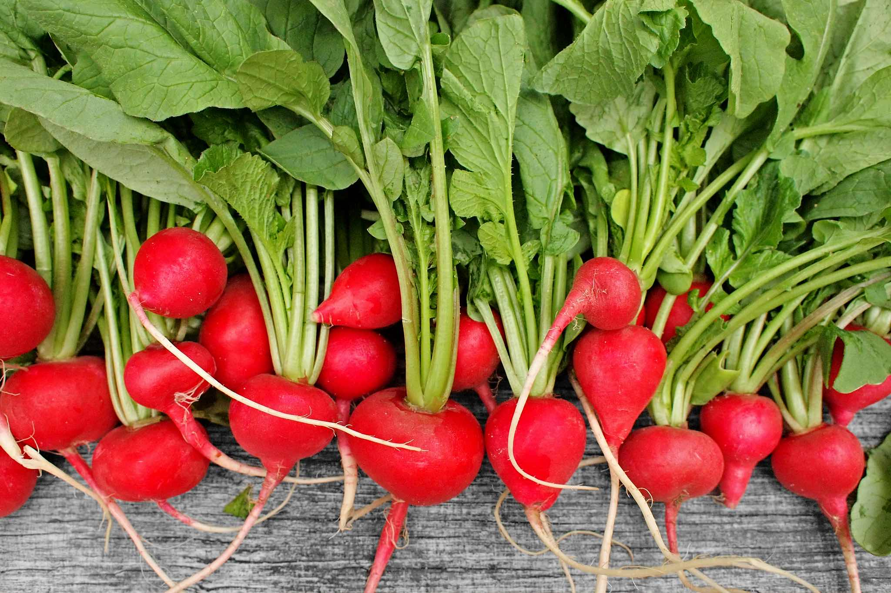
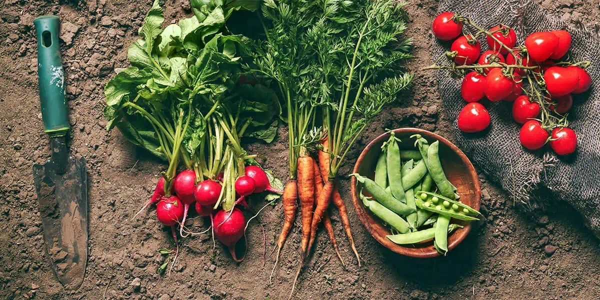
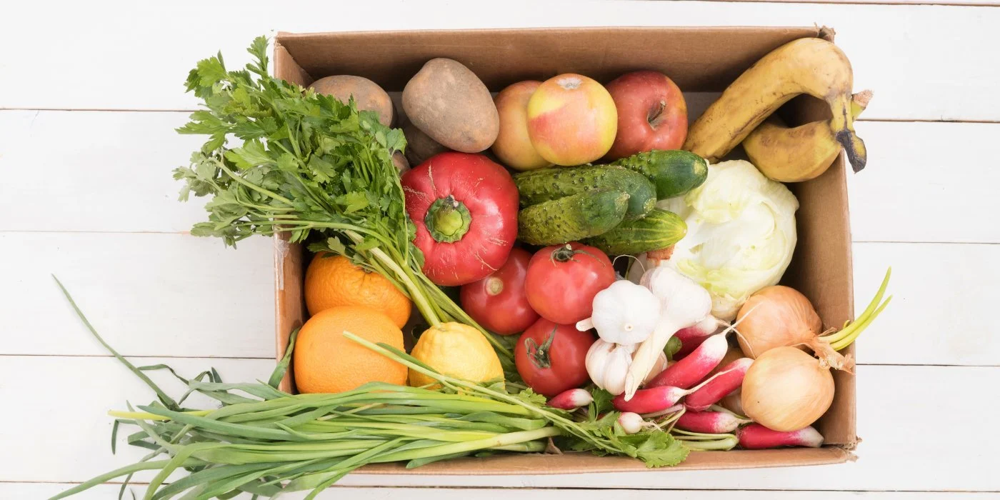

Poctivé zelinářství s tradicí
Věříme, že zelenina by měla mít chuť a vůni. Proto u nás nenajdete žádné unavené kousky z dovozu, ale pouze sezónní produkty, které dozrály na slunci a ne v kamionu.

Vždy sezónní
Nabízíme to, co právě roste. Od jarních ředkviček až po podzimní dýně. Příroda ví nejlépe, co nám má zrovna chutnat.
Aktuální nabídka
Bez chemie
Naše zelenina je pěstována s respektem k půdě. Spolupracujeme s farmáři, kteří nepoužívají zbytečné pesticidy.
Více o původu
Bedýnky domů
Nemáte čas k nám zajít? Sestavíme vám týdenní bedýnku plnou vitamínů a dovezeme ji až k vašim dveřím.
Chci bedýnku